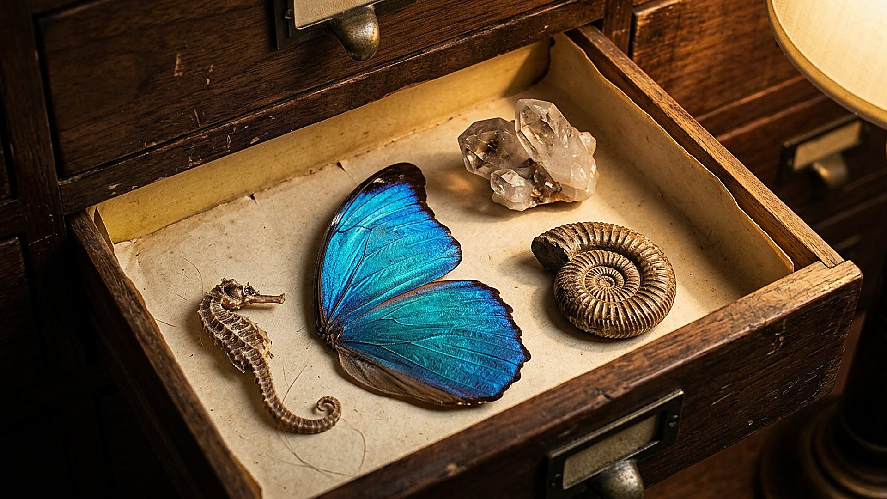

Reconstitution numérique
Glossaire
Les mots du musée
18 termes techniques, noms d'espèces et unités employés dans les salles, expliqués en français courant. Chaque entrée renvoie à la salle où le mot est utilisé.
ATP (adénosine triphosphate)
Molécule de stockage d'énergie chimique utilisée par toutes les cellules connues : elle est produite en continu et consommée en continu, comme une batterie rechargeable à l'échelle moléculaire. Salle 09 — La cellule, une usine automatisée
Barge rousse
Oiseau limicole migrateur (Limosa lapponica) capable du plus long vol sans escale jamais enregistré par suivi satellite, de l'Alaska à la Tasmanie. Salle 14 — Les grands navigateurs
Bousier
Coléoptère se nourrissant de déjections ; certaines espèces roulent des boules et s'orientent d'après la bande lumineuse de la Voie lactée. Salle 14 — Les grands navigateurs
Champ magnétique
Région de l'espace où s'exercent des forces sur des aimants ou des charges électriques en mouvement. Celui de la Terre dévie une partie des particules énergétiques venues du Soleil. Salle 06 — Les boucliers invisibles
Cicadelle
Petit insecte sauteur (famille des Cicadellidae) ; les nymphes du genre Issus possèdent de véritables engrenages cuticulaires sur les pattes arrière. Salle 16 — « Instinctivement sages »
Cryptochrome
Protéine sensible à la lumière bleue présente chez de nombreux animaux ; son rôle dans une éventuelle boussole magnétique chimique est l'hypothèse dominante, non encore établie in vivo. Salle 14 — Les grands navigateurs
Cuticulaire (cuticule)
Relatif à la cuticule, enveloppe externe rigide sécrétée par l'épiderme des arthropodes ; c'est dans cette matière que sont taillées les dents des engrenages de la cicadelle Issus. Salle 16 — « Instinctivement sages »
Décalage vers le rouge
Allongement de la longueur d'onde de la lumière d'un objet qui s'éloigne de l'observateur ; pour les galaxies lointaines, il mesure l'expansion de l'univers. Salle 04 — Il appelle les étoiles par leur nom
Engrenage
Assemblage de roues dentées qui se transmettent un mouvement de rotation ; chez la cicadelle Issus, il synchronise les deux pattes arrière au saut. Salle 16 — « Instinctivement sages »
Fond diffus cosmologique
Rayonnement fossile émis quand l'univers est devenu transparent, environ 380 000 ans après le commencement ; sa mesure donne l'âge et la composition de l'univers. Salle 01 — Au commencement
Fovéa
Dépression centrale de la rétine où la densité de photorécepteurs est maximale ; chez les primates, sa forme et son rôle optique font l'objet de travaux récents et discutés. Salle 18 — Le corps humain, un chef-d'œuvre
Génome
Ensemble du matériel génétique d'un organisme, porté par son ADN ; il se lit comme un texte à quatre lettres dont les phrases commandent la fabrication des protéines. Salle 10 — L'ADN, le langage du vivant
Nanomètre
Unité de longueur valant un milliardième de mètre ; les longueurs d'onde de la lumière visible se mesurent en centaines de nanomètres. Salle 15 — Des sens extraordinaires
Nymphe
Stade de développement des insectes à métamorphose incomplète, entre l'éclosion et l'âge adulte ; c'est chez la nymphe de la cicadelle Issus que les engrenages sont présents. Salle 16 — « Instinctivement sages »
Photorécepteur
Cellule ou protéine capable de capter la lumière ; la rétine humaine en contient trois types pour les couleurs, la squille jusqu'à douze. Salle 15 — Des sens extraordinaires
Polarisation circulaire
État d'une lumière dont le champ électrique tourne en hélice autour de la direction de propagation ; la squille la détecte, l'œil humain non. Salle 15 — Des sens extraordinaires
Sterne arctique
Oiseau marin (Sterna paradisaea) effectuant chaque année la plus longue migration connue, entre Arctique et Antarctique. Salle 14 — Les grands navigateurs
Trochanter
Segment de la patte des arthropodes, situé entre la hanche et le fémur ; c'est sur les trochanters que s'engrènent les dents cuticulaires de la cicadelle. Salle 16 — « Instinctivement sages »